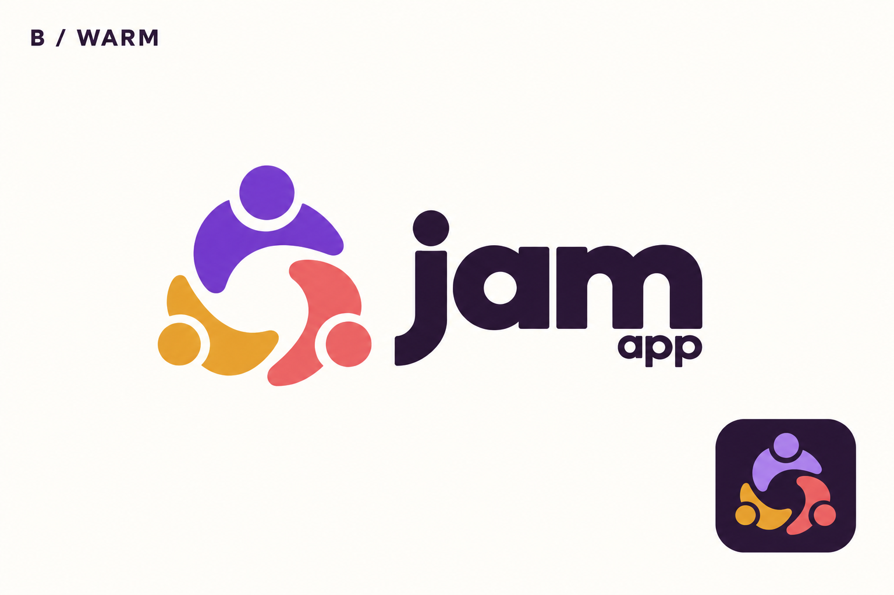

Original Together + Warm palette
Recovered approved raster references and a new vector trace candidate. Raster originals remain the authority. The trace preserves the original row 02 contours and lockup spacing, with flat palette B fills; finished SVG approval is still required.
Original #02 geometry — authoritative
Exact original pixels, cropped only by this viewport. Not a 2A–2D exploration.
Vector trace candidate — light lockup
Actual path geometry; outlined wordmark; no image embedding or font dependency.
Selected dark treatment — authoritative
Exact lower-right sample from the B Warm sheet. The session did not include a full dark-surface wordmark proof.
Vector trace candidate — dark symbol
Uses original geometry, not any small shape drift in the generated color preview.
Approved B Warm sheet — authoritative color reference
